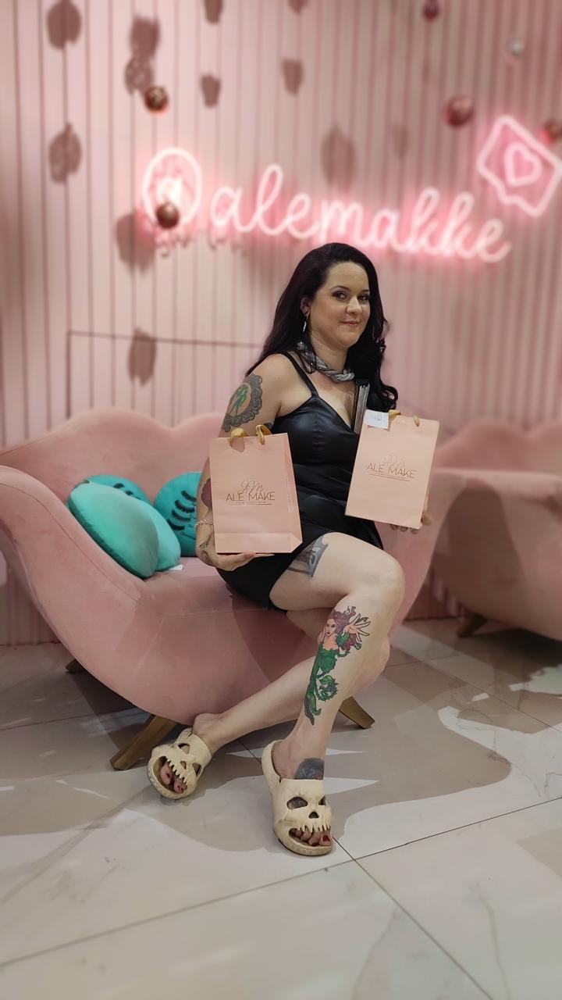
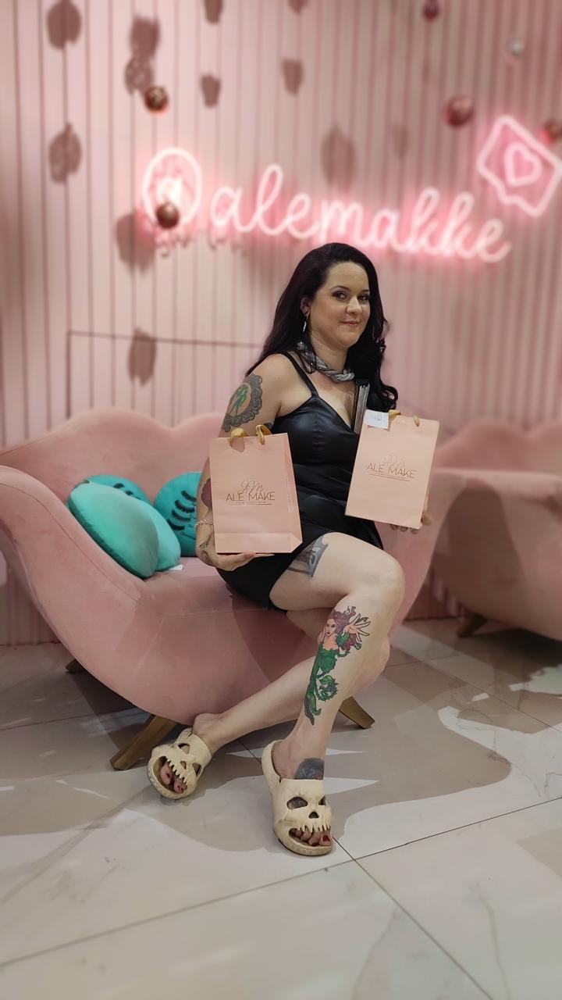

Bem-vindo ao Diva Tattoo
Bem-vindos ao Concurso Divas Tattoo, um evento único e vibrante que celebra a arte da tatuagem e a individualidade de cada participante.
Este concurso não é apenas uma competição de beleza, mas uma plataforma onde a criatividade, a expressão pessoal e a arte corporal se encontram em um espetáculo inesquecível.

Diva Tattoo
O concurso Diva Tattoo CE é uma competição de beleza para Mulheres Tatuadas à nível Nordeste, que tem como objetivo representar a mulher tatuada. Ela sempre marca presença em convenções, abrilhantando, embelezando e admirando a arte no contexto dos eventos de tatuagem.
Por muito tempo, concursos desse tipo foram motivo de piada, não sendo levados a sério e nem recebendo a devida importância. No entanto, concursos de Miss e de beleza feminina são bastante significativos, pois existem mulheres dedicadas e empoderadas que desejam mostrar sua importância não só através da beleza, mas também por meio de seu empenho e trabalho em outras áreas.
A importância do Diva Tattoo CE em um evento de tatuagem e modificação corporal também está relacionada ao aumento do público, pois tanto a organização quanto as finalistas trabalham diretamente na divulgação do evento. Isso motiva em vários aspectos, como trazer clientes para os profissionais tatuadores e atrair um nicho de pessoas curiosas que possam se interessar pelo evento.
O Diva Tattoo nasceu da ideia de dar visibilidade à arte na pele, apresentando os trabalhos de profissionais como tatuadores e piercers ou admiradores da arte.
As mulheres que participam são apaixonadas pela arte da tatuagem, seja por amor, por trabalharem nessa área, em estúdios, ou por terem familiares diretamente envolvidos nesse nicho. É um projeto criado por mulheres que amam o universo da tatuagem e que sempre sentiram falta de um esforço feminino mais significativo em eventos de tatuagem, apesar de 40% do público desses eventos ser feminino, em um campo predominantemente masculino.
O concurso Diva Tattoo não segue padrões físicos e éticos rígidos. Nosso objetivo é aproximar mulheres e aumentar a sororidade entre elas. Embora seja uma competição, nosso projeto visa o crescimento e empoderamento feminino.
Contato
Instagram: @divatattooce
Email: divatattooce@gmail.com
Fotos
Fotos das edições:

Equipe
Nossa Equipe:
Evelyne Almeida

Organizadora e Idealizadorado Diva Tattoo Esteticista Instrutora Master Madinail Treinamento e Workshop Tatuada

Organizadora do Diva Tattoo Body Piercer Profissional Miss Brasil Tattoo 2022 Miss Tattoo Week 2023 Tatuada

Desenvolvedora Web, responsável pelo suporte e site do Diva Body Piercer Profissional Tatuada
Patrocinadores
O projeto Miss Tattoo é muito mais do que um concurso de beleza; ele é uma celebração da arte corporal, da expressão individual e da cultura da tatuagem. Para que um evento dessa magnitude se concretize e alcance seu pleno potencial, o apoio de patrocinadores é essencial.

 

Os patrocinadores desempenham um papel vital na viabilização do projeto Divas Tattoo, fornecendo não apenas recursos financeiros, mas também apoio logístico e visibilidade. Com sua contribuição, é possível garantir uma produção de alta qualidade, desde a estrutura do evento até a premiação das participantes. Esses recursos permitem que o concurso seja realizado em um ambiente adequado, com toda a infraestrutura necessária para acolher o público e destacar as participantes de forma profissional.
Além disso, os patrocinadores trazem consigo a credibilidade de suas marcas, o que agrega valor ao evento e fortalece sua imagem perante o público. Esse respaldo é fundamental para atrair um público diversificado e aumentar a cobertura da mídia, ampliando o alcance do projeto e, consequentemente, o impacto cultural e social do Divas Tattoo.
Em troca, os patrocinadores têm a oportunidade de associar suas marcas a um evento que celebra a criatividade, a diversidade e o empoderamento. Eles se posicionam ao lado de um movimento que valoriza a arte e a individualidade, engajando-se diretamente com um público-alvo apaixonado e leal. Essa parceria proporciona uma visibilidade única, reforçando o compromisso das marcas com a cultura da tatuagem e o apoio a iniciativas que promovem a inclusão e a expressão pessoal.
Portanto, o apoio dos patrocinadores não apenas possibilita a realização do projeto Miss Tattoo, mas também contribui para a promoção da arte da tatuagem e para o fortalecimento da comunidade que a cerca. Juntos, patrocinadores e organizadores constroem um evento que transcende a competição, tornando-se um verdadeiro marco na cultura da tatuagem e no empoderamento feminino.